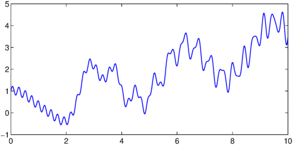
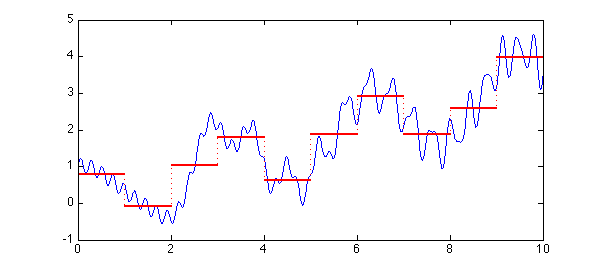
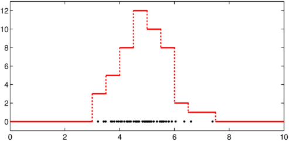

function Histogram
Suppose we have a chebfun, like this one:
x = chebfun('x',[0,10]);
f = x/3 + cos(2*x) + .5*sin(x.^2) + .2*sin(27*x);
LW = 'linewidth';
plot(f,LW,1), hold on

and we have some bins defined by bin edges, like these:
edges = 0:10;
and we want to "bin" $f$ into these bins. Here is a histogram function that will do something along these lines. In each bin, the value it stores is the total integral of $f$ in that interval.
function h = hist(f,edges)
nbins = length(edges)-1;
data = zeros(nbins,1);
fsum = cumsum(f);
for k = 1:nbins
a = edges(k); b = edges(k+1);
data(k) = fsum(b)-fsum(a);
end
h = chebfun(num2cell(data),edges);
end
If we apply the function to our data, we get a histogram represented as a piecewise constant chebfun:
h = hist(f,edges); plot(h,'r',LW,2)

What if we wanted to start from data points rather than a function? Chebfun would allow us to do this with delta functions, like this:
npts = 50; xpts = 5+randn(npts,1);
f2 = 0*x;
for j = 1:npts
f2 = f2 + dirac(x-xpts(j));
end
hold off
plot(xpts,0*xpts,'.k','markersize',10)
edges = 0:.5:10;
h = hist(f2,edges);
hold on, plot(h,'r',LW,2)
ylim([-1,max(h)+1])

This is an extremely inefficient way to work with data, but it illustrates some of the ways in which chebfuns can be manipulated.
Perhaps an overload of Matlab's hist command should be included in Chebfun? Such an overload would certainly not use delta functions internally, and it would require some careful thinking about appropriate definitions.
end